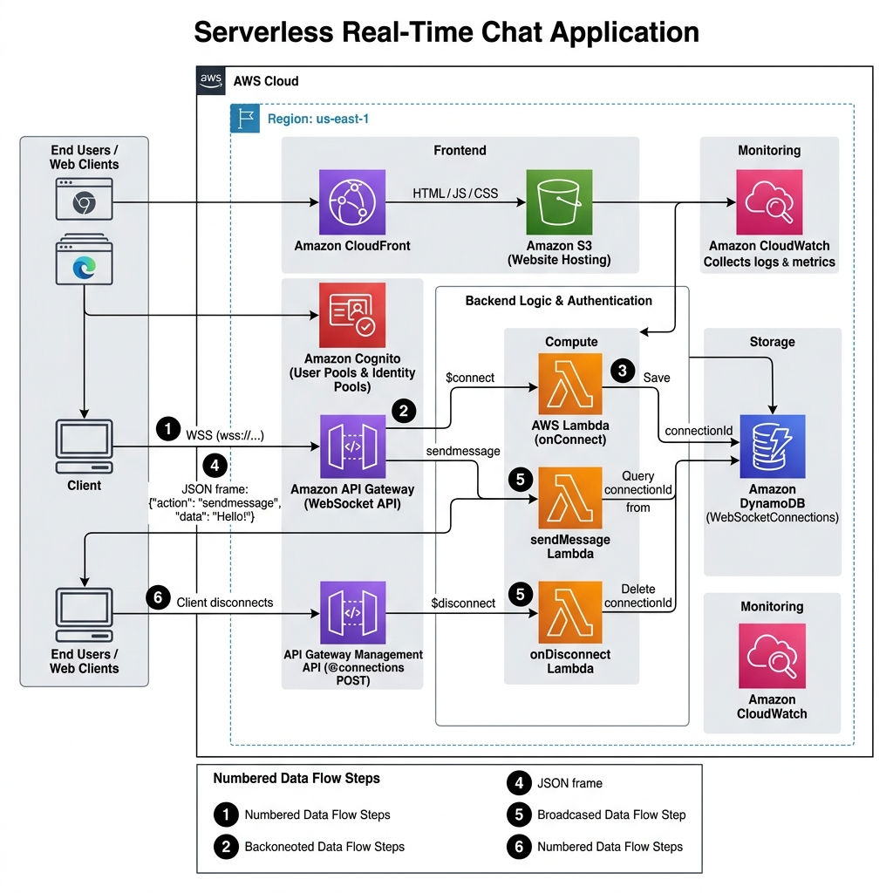

Bản đề xuất
Bản Đề Xuất Dự Án: Xây Dựng Ứng Dụng Chat Thời Gian Thực Serverless Trên AWS
1. Tổng quan đề xuất
Dự án được thực hiện nhằm xây dựng một ứng dụng nhắn tin thời gian thực với độ trễ thấp, có khả năng tự động mở rộng theo lượng người dùng truy cập và tối ưu chi phí vận hành dựa trên các dịch vụ Điện toán đám mây của AWS. Việc áp dụng giao thức WebSocket kết hợp kiến trúc Serverless (không máy chủ) giúp loại bỏ việc duy trì máy chủ chạy liên tục 24/7, đáp ứng các yêu cầu về tính sẵn sàng, bảo mật và khả năng giám sát hệ thống.
2. Đặt vấn đề và Mục tiêu giải pháp
Vấn đề thực tế
- Mô hình ứng dụng chat truyền thống thường sử dụng máy chủ Socket (như Node.js/Socket.io) chạy 24/7 trên EC2 hoặc VPS. Điều này phát sinh chi phí duy trì cố định ngay cả khi không có người dùng kết nối.
- Việc cấu hình tự động mở rộng (Auto Scaling) cho kết nối socket hai chiều khi lưu lượng tăng đột biến khá phức tạp.
- Đòi hỏi công sức quản trị, cập nhật hệ điều hành và bảo trì máy chủ định kỳ.
Giải pháp xây dựng
- Kiến trúc Serverless: Sử dụng Amazon API Gateway (WebSocket API) để duy trì kết nối hai chiều giữa Client và Server, AWS Lambda xử lý logic sự kiện, và Amazon DynamoDB lưu trữ danh sách kết nối cùng lịch sử tin nhắn.
- Hosting và Lưu trữ: Giao diện người dùng (HTML/CSS/JS) được lưu trữ trên Amazon S3 và phân phối qua Amazon CloudFront. Xác thực tài khoản người dùng được tích hợp qua Amazon Cognito.
- Giám sát hệ thống: Theo dõi nhật ký thực thi và hiệu năng thông qua Amazon CloudWatch.
Lợi ích đạt được
- Tối ưu chi phí: Mô hình thanh toán theo lưu lượng thực tế (Pay-per-use) giúp tận dụng tối đa gói AWS Free Tier, giảm thiểu chi phí vận hành trong giai đoạn thử nghiệm.
- Độ trễ thấp: Giao thức WebSocket duy trì kết nối liên tục cho phép gửi và nhận tin nhắn gần như tức thì.
- Khả năng co giãn: Hệ thống tự động xử lý khi số lượng kết nối đồng thời tăng lên mà không cần cấu hình máy chủ thủ công.
3. Sơ đồ kiến trúc giải pháp

[ Web Client Browser ] <--- HTTPS ---> [ Amazon CloudFront / S3 ] (Frontend Hosting)
|
WebSocket (WSS)
|
v
[ Amazon API Gateway ] (WebSocket API)
/ | \
$connect $disconnect sendmessage
| | |
v v v
[ AWS Lambda Handlers ]
|
v
[ Amazon DynamoDB ] (Tables: WebSocketConnections, ChatMessages)
|
v
[ Amazon CloudWatch ] (Logs, Metrics, Alarms)
Chi tiết các dịch vụ AWS sử dụng:
- Amazon API Gateway (WebSocket API): Tiếp nhận và duy trì kết nối WebSocket hai chiều.
- AWS Lambda: Thực thi mã xử lý cho các tuyến đường sự kiện
$connect, $disconnect, và sendmessage.
- Amazon DynamoDB: Lưu trữ dữ liệu kết nối (
connectionId) và nội dung tin nhắn.
- Amazon S3 & CloudFront: Lưu trữ và phân phối giao diện web người dùng.
- Amazon Cognito: Quản lý đăng ký, đăng nhập và xác thực token người dùng.
- Amazon CloudWatch: Ghi nhận log hệ thống và cấu hình cảnh báo khi có lỗi.
4. Kế hoạch triển khai
| Giai đoạn |
Nội dung công việc |
Kết quả đầu ra |
| Giai đoạn 1 |
Phân tích yêu cầu, thiết kế sơ đồ kiến trúc và cấu trúc bảng DynamoDB |
Sơ đồ kiến trúc & Schema DynamoDB |
| Giai đoạn 2 |
Khởi tạo bảng DynamoDB và viết các hàm Lambda xử lý kết nối (onConnect, onDisconnect, sendMessage) |
Các hàm Lambda xử lý sự kiện |
| Giai đoạn 3 |
Cấu hình WebSocket API trên API Gateway, định tuyến route và tạo Deployment Stage |
WebSocket Endpoint (wss://...) |
| Giai đoạn 4 |
Xây dựng giao diện Web Client (index.html), kết nối WebSocket và triển khai lên S3/CloudFront |
Giao diện Chat hoạt động trên CloudFront |
| Giai đoạn 5 |
Tích hợp xác thực Amazon Cognito, cấu hình CloudWatch Logs & Alarms |
Hệ thống được xác thực và giám sát |
| Giai đoạn 6 |
Kiểm thử truyền nhận tin nhắn, kiểm tra log CloudWatch, đánh giá kiến trúc và viết kịch bản dọn dẹp tài nguyên |
Báo cáo hoàn chỉnh & Cleanup script |
5. Dự toán chi phí
Hệ thống được thiết kế để vận hành trong phạm vi hạn mức gói AWS Free Tier:
- AWS Lambda: Hạn mức 1.000.000 yêu cầu/tháng và 3.2 triệu giây thời gian xử lý miễn phí.
- Amazon DynamoDB: Hạn mức 25 GB dung lượng lưu trữ NoSQL miễn phí.
- Amazon API Gateway: Hạn mức 1.000.000 phút kết nối WebSocket và 1.000.000 tin nhắn/tháng miễn phí.
- Amazon S3 & CloudFront: Miễn phí 5 GB lưu trữ S3 và 1 TB dung lượng truyền dữ liệu qua CloudFront.
- Amazon CloudWatch: Miễn phí 5 GB log dữ liệu và 10 chỉ số theo dõi (metrics).
Dự kiến chi phí trong quá trình thực hiện dự án: 0.00 USD/tháng (hoặc dưới 1.00 USD nếu vượt nhẹ hạn mức thử nghiệm).
6. Quản lý rủi ro và Phương án xử lý
- Xử lý kết nối lỗi (Stale Connections): Khi người dùng ngắt kết nối đột ngột mà kết nối chưa kịp xóa khỏi DynamoDB.
- Phương án xử lý: Cấu hình hàm
sendMessage bắt mã lỗi 410 Gone từ API Gateway để tự động xóa connectionId không còn hoạt động khỏi bảng DynamoDB.
- Bảo mật quyền truy cập:
- Phương án xử lý: Cấu hình quyền hạn tối thiểu (Least Privilege) cho IAM Role của Lambda và bắt buộc xác thực token qua Cognito Authorizer khi mở kết nối WebSocket.
- Kiểm soát chi phí phát sinh:
- Phương án xử lý: Cấu hình ngưỡng cảnh báo chi phí trong AWS Budgets ở mốc $1.00 và chuẩn bị kịch bản dọn dẹp tài nguyên sau khi kết thúc thử nghiệm.
7. Kết quả kỳ vọng
- Xây dựng và triển khai thành công ứng dụng Serverless Real-Time Chat App chạy thực tế trên hạ tầng AWS.
- Đáp ứng các yêu cầu kỹ thuật và tiến độ của bài báo cáo thực tập chương trình First Cloud AI Journey.
- Nắm vững phương pháp thiết kế và triển khai ứng dụng theo kiến trúc Serverless trên AWS.